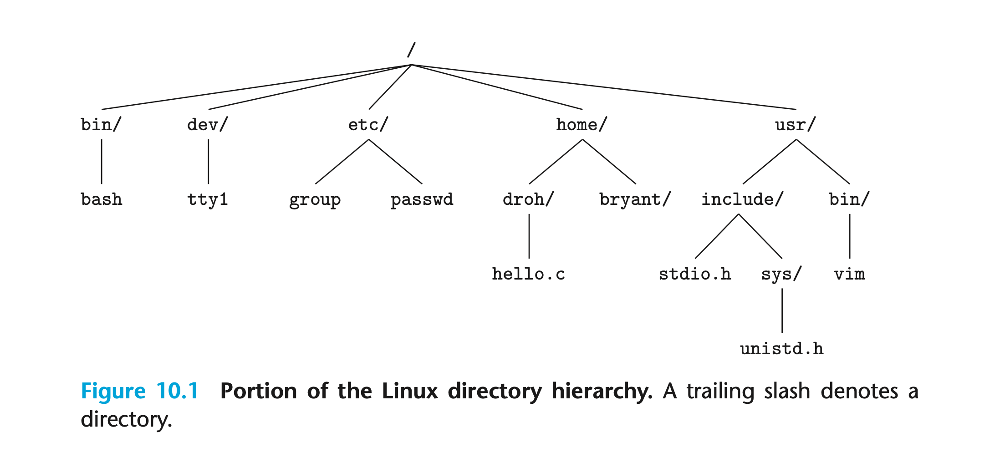
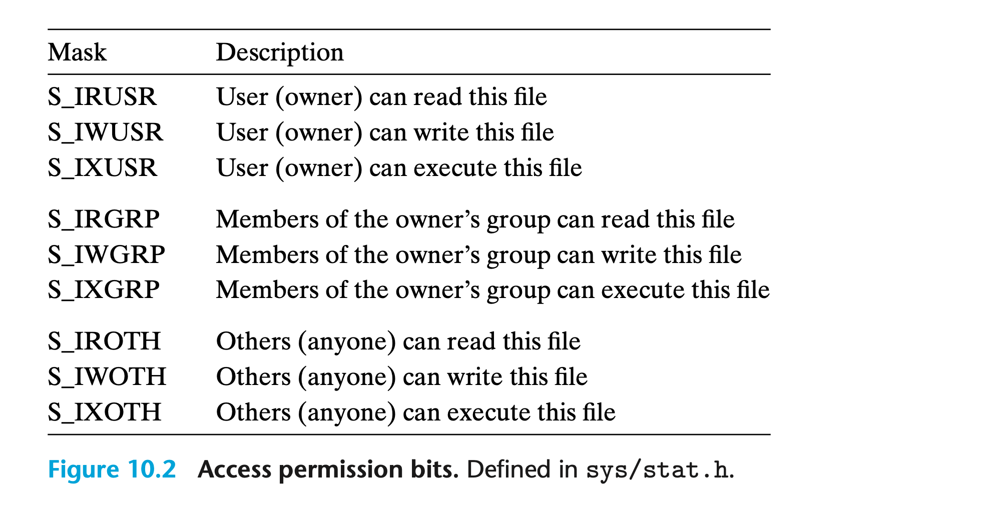
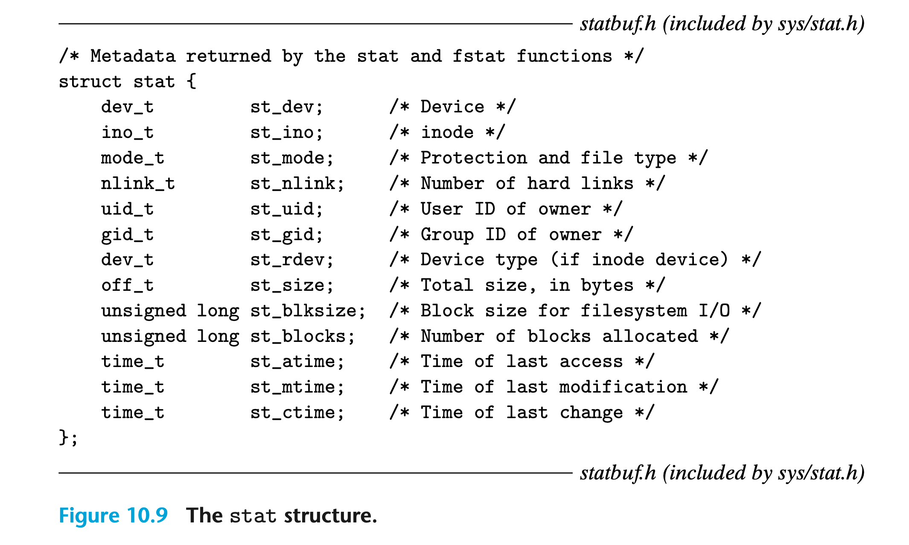
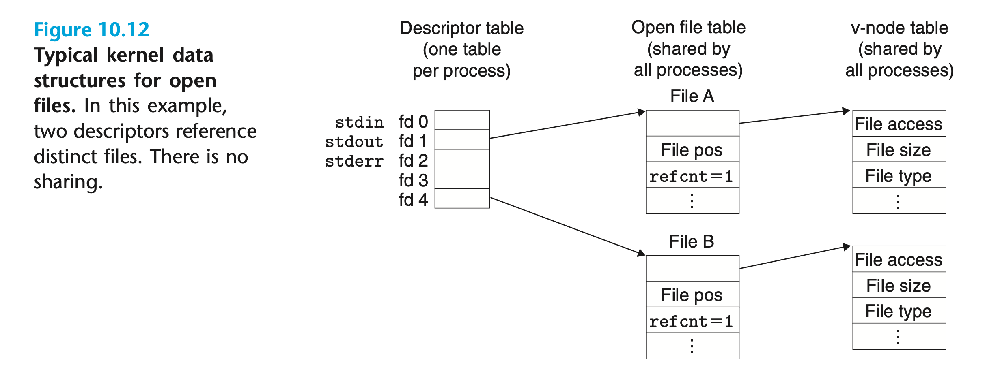
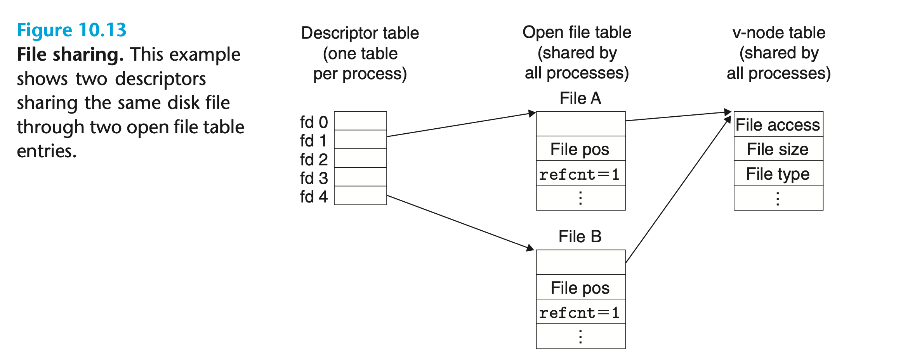
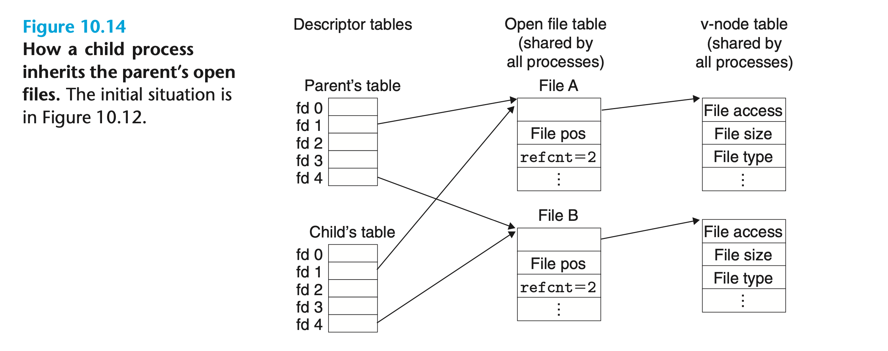
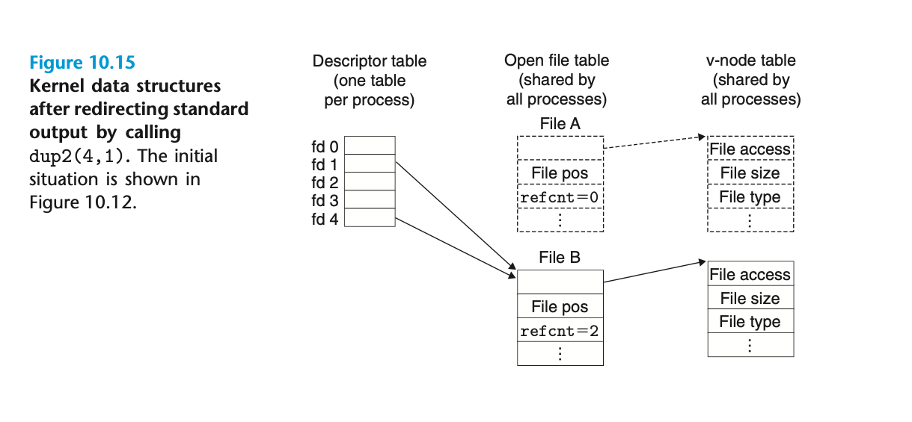
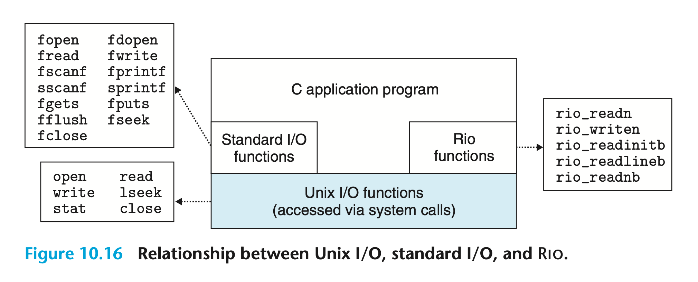

系统级I/O¶
输入/输出 (I/O) 是在主存储器和外部设备（如磁盘驱动、终端和网络等）之间复制数据的过程。输入操作将数据从 I/O 设备复制到主存，输出操作则将数据从主存复制到设备。
Unix I/O¶
Linux 文件是由 m 个字节组成的序列：
所有的 I/O 设备均被建模为文件，输入和输出是通过读写对应的文件来完成的。Linux 内核基于这种设备与文件之间的优雅映射为我们提供了一个简单而低级的应用程序接口，即 Unix I/O，它使得所有的输入和输出都能以一致的方式执行：
- 打开文件：应用程序通过向内核发起打开文件请求以访问 I/O 设备。内核将返回一个小的非负整数，即文件描述符（File Descriptor），它将在对文件的后续操作中标识该文件。内核跟踪与打开文件相关的所有信息，而应用程序则只跟踪描述符。每个由 Linux Shell 创建的进程都会打开三个文件：标准输入（
STDIN_ FILENO，描述符 0）、标准输出（STDOUT_FILENO，描述符 1）和标准错误（STDERR_FILENO，描述符 2）； - 改变当前文件位置：内核为每个打开文件维护一个文件位置（File Position）k，初始值为 0。文件位置是文件中下一个即将被读取或写入的字符到文件起始位置的字节偏移量，并非指该文件在文件系统中的位置。应用程序可以通过执行 Seek 操作来显式地设置当前文件位置 k；
- 读写文件：读取操作从当前文件位置 k 开始，复制 n 个字节到内存中，随后令 k 增加 n。当文件位置大于或等于文件大小时，读取操作会触发 EOF（End-of-File）。类似地，写入操作从当前文件位置 k 开始，复制 n 个字节到文件中并更新 k 的值；
- 关闭文件：当应用程序结束对文件的访问时，它会向内核发起关闭文件请求，内核释放打开文件时创建的数据结构并将描述符放回可用描述符池。若进程因某些原因终止，内核将关闭所有打开的文件并释放相应的内存资源。
文件¶
每个 Linux 文件都有一个表征其在系统中角色的类型：
- 常规文件（Regular File）：对于应用程序来说，常规文件分为仅包含 ASCII 或 Unicode 字符的文本文件（Text File）和二进制文件（Binary File）；但对于内核而言，两者没有区别。Linux 文本文件由一系列文本行（Text Line）组成，其中每一行都以换行符
\n结尾； - 目录（Directory）：目录是由链接（Link）数组构成的文件。链接将一个文件名映射到一个文件，该文件可能是另一个目录（如下图所示）。每个目录中至少包含两个链接：
.指向目录本身，而..指向上级目录； - Socket：用于通过网络与另一个进程通信的文件。

打开和关闭文件¶
进程可以调用函数open来打开一个已存在的文件或创建一个新文件：
返回的文件描述符是进程当前未打开的最小描述符。参数flags指示进程如何访问文件：
O_RDONLY：只读O_WRONLY：只写O_RDWR：读写
该参数还可以与一个或多个位掩码进行或（OR）运算，这些位掩码提供写入的附加说明：
O_CREAT：如果文件不存在，则创建一个空文件；O_TRUNC：如果文件已经存在，则清空文件内容；O_APPEND：在每次写入操作之前，将文件位置设置为文件末尾。
若文件已存在，参数mode应设为 0；反之，则设为新文件的访问权限位，可选项如下图所示：

作为进程上下文的一部分，每个进程都有一个通过umask函数设置的umask掩码。当进程调用open函数创建新文件时，文件的访问权限位会被设置为mode & ~umask。如下示例程序将创建一个所有者拥有读写权限、其他用户都有读取权限的新文件：
进程调用close函数来关闭一个打开的文件，若文件描述符已关闭将引发错误：
读写文件¶
应用程序调用read和write函数来执行输入和输出：
read函数从参数fd的当前文件位置复制最多n个字节到内存中buf指向的位置，write函数则从内存中buf指向的位置复制最多n个字节到参数fd的当前位置。示例程序使用上述两种函数将标准输入以字节为单位复制到标准输出：
在某些情况下，读写操作传输的字节数小于应用程序请求的字节数。不足数（Short Count）的产生并不代表发生了错误，它可能由多种原因导致：
- 读取时遇到 EOF：若我们对一个 20 字节的文件执行
read(fd, *buf, 50)，那么第一次调用将返回一个 20 的不足数，第二次调用则返回 0（EOF）； - 从终端读取文本行：若打开的文件是终端设备（即键盘和显示器），那么每次
read调用都将传输一个文本行并返回一个与文本行大小相等的不足数； - 读写 Socket：若打开的文件是 Socket，那么内部缓冲区限制和网络延迟将使读写操作返回不足数。
因此除遇到 EOF 外，读写磁盘文件不会导致不足数的产生。但如果我们想要构建健壮而可靠的网络应用程序，就必须重复调用read和write以保证所有请求的字节均已被传输。
使用 \(R_{IO}\) 包实现健壮读写¶
\(R_{IO}\) 包为应用程序提供了方便、健壮且高效的 I/O，可以解决编写网络程序时遇到的不足数问题：
- 无缓冲的输入/输入函数：直接在内存和文件之间传输数据，适用于从网络中读写二进制数据；
- 有缓冲的输入函数：从应用程序级别的缓冲区中读取文本行和二进制数据，与标准 I/O（如
printf）函数类似。该函数是线程安全（Thread-safe）的，并且可以对同一描述符任意交错（Interleave）。例如，我们可以从描述符中读取一些文本行，然后读取一些二进制数据，最后再读取一些文本行。
无缓冲的输入/输入函数¶
rio_readn函数从参数fd的当前文件位置复制最多n个字节到内存中usrbuf指向的位置，rio_writen函数则从内存中usrbuf指向的位置复制最多n个字节到参数fd的当前位置。前者只有在遇到 EOF 时返回不足数，后者则从不返回不足数。
若上述函数被应用程序的信号处理程序的返回中断，它们会重新调用read和write函数：
有缓冲的输入函数¶
假设我们需要编写一个计算文本文件行数的程序，最简单的方法便是调用read函数每次读取一个字节并检查是否有换行符。但由于read是系统调用，频繁的上下文切换将导致程序效率低下。
更好的方法是调用包装函数rio_readlineb从内部读取缓冲区（Read Buffer）复制文本行，只有当缓冲区为空时才调用read以重新填充缓冲区。\(R_{IO}\) 包还为同时包含文本行和二进制数据的文件（如 HTTP 响应）提供了rio_readn函数的有缓冲版本，即rio_readnb：
在调用上述两种有缓冲的输入函数前，我们需要为每个打开文件描述符调用一次rio_readinitb。该函数将描述符fd与地址rp处的读取缓冲区（类型为rio_t）相关联：
\(R_{IO}\) 包读取例程的核心是rio_read函数，它其实是read函数的有缓冲版本。若读取缓冲区中的未读字节数rp->rio_cnt为 0，则在循环内调用read函数对其填充；若读取缓冲区非空，则调用memcpy函数将min(n, rp->rio_cnt)字节从缓冲区复制到usrbuf指向的内存位置：
在应用程序看来，rio_read函数与read函数具有相同的语义：执行发生错误时，它返回 -1 并设置 errno；执行遇到 EOF 时，它返回 0；当请求的字节数大于读取缓冲区中的未读字节数时，它返回一个不足数。因此我们可以通过将read替换为rio_read来构建不同类型的有缓冲读取函数。
实际上，rio_readnb与rio_readn具有完全相同的结构，只不过我们用rio_read替换了read：
类似地，rio_readlineb函数从文件rp中读取一个文本行并将其复制到内存中usrbuf指向的位置。循环内每次对rio_read的调用都会把读取缓冲区中的一个字节复制到&c，然后检查它是否是换行符：
读取文件元数据¶
应用程序调用stat和fstat函数获取一个文件的元数据：
函数stat使用文件名*filename作为输入，将信息填写到stat结构体中。fstat与之类似，但它的参数是文件描述符fd。结构体stat如下图所示，我们只需关注字段st_mode和st_size：

st_size包含了文件的大小，而st_mode则包含了文件的访问权限和类型。
读取目录内容¶
应用程序调用opendir和readdir函数读取目录中的内容：
函数opendir以目录的路径名为参数，返回一个指向目录流（Directory Stream）的指针。流是对有序项目列表的抽象，此处指的是目录中条目的列表。函数readdir返回指向目录流中下一个条目的指针，每个条目都是一个dirent结构体：
d_name是文件名，d_ino是文件的 inode 数。当发生错误时，readdir返回NULL并设置errno。
函数closedir关闭目录流并释放所有相关资源：
共享文件¶
内核使用三种数据结构来表示打开的文件：
- 描述符表（Descriptor Table）：每个进程都有一个独立的描述符表，每个条目均指向打开文件表中的条目，其索引是进程打开的文件描述符；
- 打开文件表（Open File Table）：所有进程共享一个打开文件表，它表示了打开文件的集合。每个文件表条目由当前文件位置（下图中的“File pos”）、当前指向它的描述符表条目数量（下图中的“refcnt”）和一个指向 v-node 表条目的指针。只有当
refcnt为 0 时，内核才会删除对应的文件表条目； - v-node 表（V-node Table）：与打开文件表一样，v-node 表由所有进程共享。其中的每个条目都包含了
stat结构体中的大部分信息，如st_mode和st_size等。v-node 与 i-node 的区别详见：Inode vs Vnode Difference。
 如上图所示，描述符 1 和 4 通过不同的打开文件表条目引用不同的文件。这是最典型的情况，文件并未共享，每个描述符对应一个不同的文件。
多个描述符也可以通过不同的打开文件表条目引用相同的文件，例如对同一文件多次调用open函数：

描述符 1 和 4 指向不同的打开文件表条目，因此其文件位置不同。假设文件foobar.txt中包含 6 个 ASCII 字符foobar，那么如下示例程序的输出结果为f：
若父进程打开文件的数据结构如上图10.12所示，则父进程调用fork函数后情况变为：

子进程得到父进程的描述符表副本，两者共享相同的打开文件表和文件位置，因此如下示例程序的输出结果为o：
I/O 重定向¶
dup2函数将描述符表条目oldfd复制到newfd并覆盖其原始内容。如果newfd已经打开，则该函数在复制oldfd之前会先关闭newfd：
假设某进程的打开文件数据结构如上图10.12所示。描述符 1（标准输出）指向文件 A（如终端），描述符 4 指向文件 B（如磁盘上的文件），文件 A 和 B 的refcnt均为 1。那么该进程调用函数dup2(4, 1)后情况变为：

文件 A 被关闭，内核会删除其打开文件表和 v-node 表条目。两个描述符均指向文件 B，其refcnt已增加为 2。从现在开始，任何写入到标准输出的数据都会被重定向到文件 B。
标准 I/O¶
C 定义了一组更高级别的输入和输出函数，即标准 I/O 库，它为程序员提供了比 Unix I/O 更高级别的替代方案。libc库提供了用于打开和关闭文件（fopen和fclose）、读取和写入字节（fread和fwrite）、读取和写入字符串（fgets和fputs）以及复杂的格式化 I/O（scanf和printf）函数。
标准 I/O 库将打开的文件建模为流。对于程序员来说，流是指向FILE类型结构体的指针。每个 ANSI C 程序都以三个打开的流stdin、stdout和stderr开头，分别与标准输入、标准输出和标准错误对应：
FILE类型的流是文件描述符和流缓冲区（Stream Buffer）的抽象。与 \(R_{io}\) 读取缓冲区相同，流缓冲区可以最大限度地减少昂贵的 Linux I/O 系统调用的次数。
我们应当使用哪种 I/O 函数？¶
Unix I/O、标准 I/O 和 \(R_{io}\) 包函数之间的关系如下图所示：
 那么我们应当使用哪种 I/O 函数呢？以下是一些建议：
- 尽可能使用标准 I/O 函数，它们是在磁盘和终端上执行 I/O 操作的最佳选择；
- 不要使用
scanf或rio_readlineb函数读取二进制文件，它们是专门为读取文本文件设计的； - 将标准 I/O 函数用于 Socket 时可能会出现一些令人讨厌的问题，因此我们应当在网络编程时使用 \(R_{io}\) 包函数。